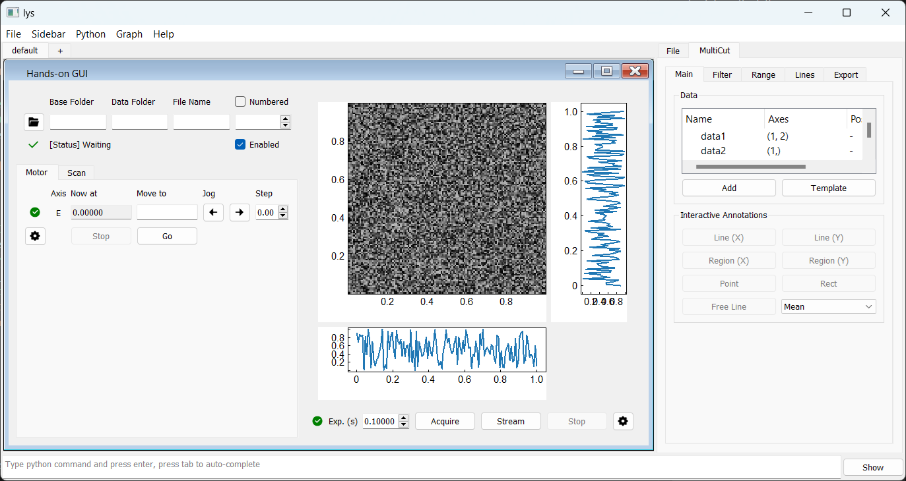
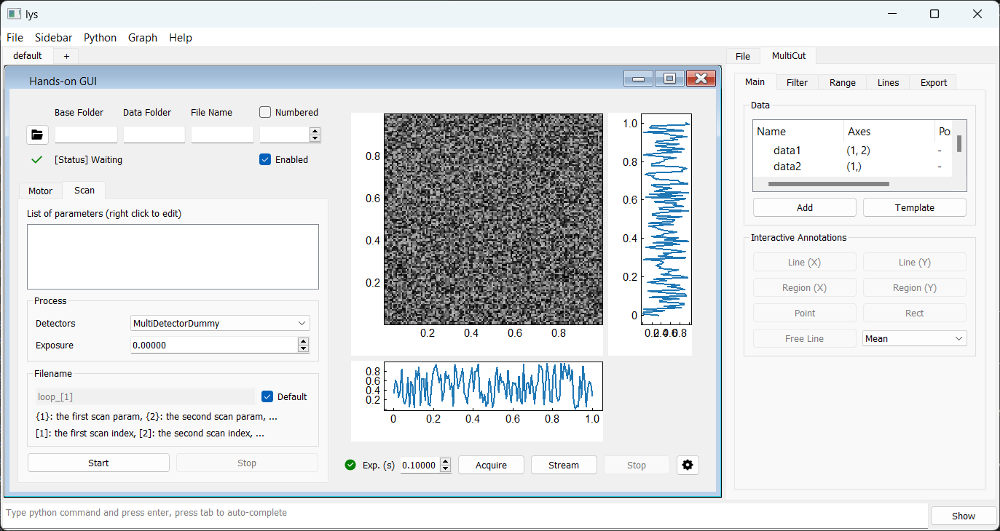

A Simple Hands-On Example
Suppose we want to automate taking a series of photos of a sample while sweeping the applied electric field, that is, control a camera to capture images after setting the source meter to specific voltage values.
With lys_instr, we can easily build a GUI to manage this measurement workflow. Let’s first take a quick look at a minimal template. By the end of this tutorial, you will be able to create similar custom GUIs.
Launch lys, enter the following code in the command line, and press Enter.
from lys_instr.templates import template0
template0.Window()
A GUI window will appear as follows:
The source meter is instantiated as a motor, with its values set and read from the Motor tab on the left. The camera is instantiated as a detector, with acquisition started and stopped from the Detector panel on the right. The Storage panel at the top left corresponds to a storage instance, which manages saving the data acquired by the camera to a specified path.
The Scan tab serves as the master control for the workflow, allowing you to configure a scan that sweeps the voltage and triggers image capture at each step.
To set up the workflow:
On the Scan tab, right-click in the blank space and select “Add new scan.”
Select the motor axis “E” for scanning (assuming it is connected to the source meter).
Define the scan range (for example, from 0 V with a step of 1 V for 10 steps).
Choose the detector “MultiDetectorDummy” (assuming it is connected to the camera).
Specify the exposure time on the Scan tab (for example, 0.1 seconds).
In the Storage panel, set the save path.
The workflow is now set up. Click “Start” to begin the measurement.
The voltage values and detector images (filled with random noise) will update to reflect the simulated behavior of the dummy motor and detector. In practical use, these dummy devices are replaced with interfaces that communicate with real instruments.
In the following sections, we will guide you through implementing interfaces for real instruments and building your own customized GUI.